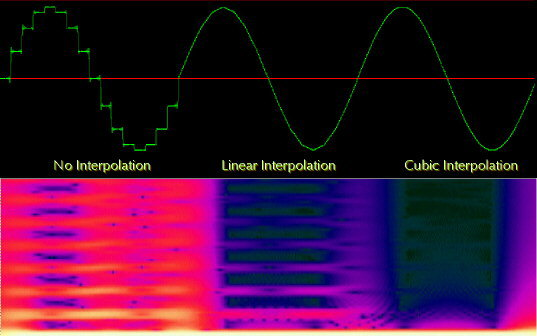
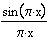
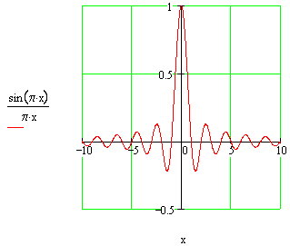
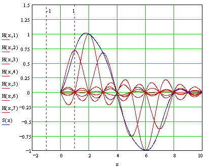

Departments

Interpolation
Hans Mikelson
INTERP.MCD Mathcad file for understanding sinc interpolation
Introduction
This article is a survey of various interpolation schemes available in Csound. I will discuss some of the types of interpolation currently implemented as opcodes and show how to implement some other interpolation schemes not currently available as opcodes. Csound currently offers two different types of interpolation: linear and cubic. These are available for the oscil, vdelay, deltap and table opcodes. Looking at the source code for the three variations of the oscil opcode reveals the difference in these three types of interpolation.
Oscil
Let's start by looking at the oscil source code which can be found in the file ugens2.c. In particular I am looking at the code for the function oscaa. The output step of this function is
*ar++ = *(ftbl + (phs >>lobits)) * *ampp++;
In this code ftbl is the f-table, phs is the phase of the oscillator, *aampp is the audio rate amplitude input parameter and lobits is determined by the size of the f-table. In this case the f-table is referenced by *(ftbl + (phas >>lobits)) and whatever value is stored there is scaled by *aamp and output to *ar. Both *ampp and *ar are incremented so they are ready for the next sample.
Linear
Linear interpolation is probably the most common type of interpolation encountered and is the easiest to implement. It is accomplished by constructing an imaginary line between two points, samples or f-table values. The following code is taken from the function oscaai also found in the Csound source file ugens2.c.
fract = (float) PFRAC(phs); ftab = ftp->ftable + (phs >> lobits); v1 = *ftab++; *ar++ = (v1 + (*ftab - v1) * fract) * *ampp++;
The macro PFRAC(phs) returns a number between 0 and 1 indicating the position of the index between the actual table values. If fract is 0 then it lies exactly on the v1 table entry. If it is .5 it lies exactly halfway between the v1 table value and the next table value. The difference between the v1 table value and the next table value is computed with (*ftab - v1). This difference is then scaled by fract before adding it to v1. If fract is zero the result is just v1. If fract is 1 then the v1's cancel and the result is *ftab. Values in between yield the equivalent of a straight line connecting the two f-table values. The result is again scaled by *ampp and output to *ar.
Instrument 4 shows how this could be done manually in Csound.
Cubic
Audio signals often follow smooth curves and linear interpolation is not the best method of interpolation. A cubic polynomial offers the advantage of a smooth curve between a set of samples. Most people know that two points determine a line. It turns out that a quadratic equation can be determined by 3 points and a cubic equation can be determined by 4 points. In general a polynomial of order N is completely determined by N+1 points. The code for cubic interpolation is much more complex then that for linear interpolation.
fract = (float) PFRAC(phs);
x0 = (phs >> lobits);
x0--;
if (x0<0) {
ym1 = ftab[ftp->flen-1]; x0 = 0;
}
else ym1 = ftab[x0++];
y0 = ftab[x0++];
y1 = ftab[x0++];
if (x0>ftp->flen) y2 = ftab[1]; else y2 = ftab[x0];
{
float frsq = fract*fract;
float frcu = frsq*ym1;
float t1 = y2 + 3*y0;
*ar++ = *ampp++ *(y0 + 0.5f*frcu + fract*(y1 - frcu/6 - t1/6 - ym1/3)
+ frsq*fract*(t1/6 - 0.5f*y1)
+ frsq*(0.5f* y1 - y0));
}
Let's take a look at this a little bit at a time. The position of phs between the stored table vales is again returned as fract.
fract = (float) PFRAC(phs);
The variable x0 is set up to reference the f-table starting with the previous value.
x0 = (phs >> lobits); x0--;
As I previously stated it takes four points to define a cubic equation. The next section obtains these four points: ym1, y0, y1 and y2.
if (x0<0) {
ym1 = ftab[ftp->flen-1]; x0 = 0;
}
else ym1 = ftab[x0++];
y0 = ftab[x0++];
y1 = ftab[x0++];
if (x0>ftp->flen) y2 = ftab[1]; else y2 = ftab[x0];
Since interpolating tables require an extra guard point we can safely access the y1 value without worrying about overrunning the table. The values ym1 and y2 have the potential of underrunning or overruning the table so this is handled with if statements.
Now that all of the y values have been obtained we can compute the cubic. One way to solve this problem would be to set up a system of four equations and four unknowns and solve them simultaneously to obtain the coefficients of the unique cubic polynomial passing through the four points. We could then substitute our x value into the polynomial and obtain the desired y value. This involves a lot of math. Without working through it all and since we do not actually need to compute the individual coefficients to find the interpolating y value this can be simplified to a single equation. A couple of temporary values are first calculated to improve the execution speed.
float frsq = fract*fract; float frcu = frsq*ym1; float t1 = y2 + 3*y0;
Finally the interpolating y value is computed.
*ar++ = *ampp++ *(y0 + 0.5f*frcu + fract*(y1 - frcu/6 - t1/6 - ym1/3)
+ frsq*fract*(t1/6 - 0.5f*y1)
+ frsq*(0.5f* y1 - y0));
This is scaled by *ampp and output to *ar as before. The following figure was generated with a sine table of only 16 entries to emphasize the interpolation errors. Without interpolation a step function is obvious and a lot of high frequencies show up in the spectrum. The linear interpolation shows some sharp edges at the top and bottom extremes and also some higher frequency components. The cubic interpolation does not show noticeable distortions in the sine wave but does show some high frequency components in the spectrum.
 Figure 1. Comparison of interpolation methods. Top graph shows waveforms and bottom graph shows frequency spectrum.
Going to a larger table size eliminates most of the artifacts. There are many times when you can not go to a larger table however.
Another problem with interpolation occurs at high frequencies. A linear interpolation tends to average out quickly changing signals like noise. In the example score the noise table sounds slightly quieter with linear interpolation. With cubic interpolation the noise is perceived to be about the same volume but actually takes up more headroom.
Sinc interpolation
Sinc interpolation is designed to minimize aliasing in a signal. The sinc function is defined as . It turns out that sinc(0)=1 but its value at any other integer is zero.
 Figure 2. Sinc function, sinc(0)=1, sinc(k)=0 if k is a non-zero integer.
Each sample's contribution to the signal is a sinc function centered on the sample. The sinc function is scaled to match the height of the sample. The frequency of the sinc function is set to match the sample rate so that all neighboring samples occur where the sinc function goes to zero, at integer values. The overall signal is the sum of all of the sinc functions of all of the samples.
 Figure 3. Sine wave constructed by summing seven sinc signals. The individual sinc signals are red and the sum of all seven signals is in blue.
Sinc interpolation can be accomplished by adding together a number of sinc functions on both sides of the point being interpolated. A windowing function can improve the interpolation. A window is used to gradually fade out the sinc values as they get farther away from the center sample. This is called windowed sinc interpolation.
Windowed sinc interpolation can be implemented in Csound. The sinc function can be implemented in Csound using the following code:
asig1 = (kfrac==0) ? ay : ay*sin(kfrac*ipi)/kfrac/ipi
Where ay is the center sample table value and kfrac is the fractional part of the table index. The following section is used to accumulate the sinc values for interpolating:
kcp1 = kcount+1 kfmcp1 = kfrac-kcp1 khn = .5+.5*cos(kfmcp1*ipi/ilevel) ; Hann (hanning) window as = (kfmcp1 == 0) ? ay : khn*ay*sin(kfmcp1*ipi)/kfmcp1/ipi asig1 = asig1 + as
The variable kfmcp1 is basically an x value for the sinc value for each sample on either side of the interpolation point.
Comments
For most applications linear interpolation is probably a good choice. If you start to notice problems in the signal try going to cubic interpolation. If you need even better interpolation a high order sinc interpolation may be required.
References and Links
Gerald, C. (1980). Applied Numerical Analysis Second Edition. pp. 153-181, 474-488. Addison-Wesley Publishing Company. Reading Massachusetts.
J. O. Smith's Digital Audio Resampling Home Page http://www-ccrma.stanford.edu/~jos/resample/
J. O. Smith's Interpolation Pages http://ccrma-www.stanford.edu/~jos/Interpolation/Simple_Interpolators_Fracti.html
Numerical Recipes in C Online http://www.ulib.org/webRoot/Books/Numerical_Recipes/bookcpdf/c3-1.pdf
Efunda http://www.efunda.com/math/num_interpolation/num_interpolation.cfm
Hermite Curve Interpolation http://www.cubic.org/~submissive/sourcerer/hermite.htm